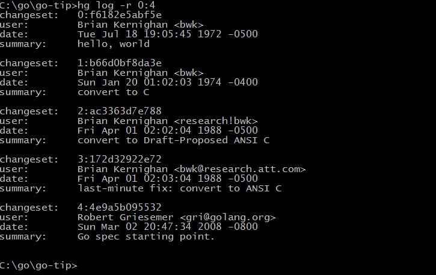

译者序
在上个世纪70年代，贝尔实验室的[Ken Thompson][KenThompson]和[Dennis M. Ritchie][DennisRitchie]合作发明了UNIX操作系统，同时[Dennis M. Ritchie][DennisRitchie]为了解决UNIX系统的移植性问题而发明了C语言，贝尔实验室的UNIX和C语言两大发明奠定了整个现代IT行业最重要的软件基础（目前的三大桌面操作系统的中Linux和Mac OS X都是源于UNIX系统，两大移动平台的操作系统iOS和Android也都是源于UNIX系统。C系家族的编程语言占据统治地位达几十年之久）。在UNIX和C语言发明40年之后，目前已经在Google工作的Ken Thompson和Rob Pike（他们在贝尔实验室时就是同事）、还有Robert Griesemer（设计了V8引擎和HotSpot虚拟机）一起合作，为了解决在21世纪多核和网络化环境下越来越复杂的编程问题而发明了Go语言。从Go语言库早期代码库日志可以看出它的演化历程（Git用git log --before={2008-03-03} --reverse命令查看）：

从早期提交日志中也可以看出，Go语言是从Ken Thompson发明的B语言、Dennis M. Ritchie发明的C语言逐步演化过来的，是C语言家族的成员，因此很多人将Go语言称为21世纪的C语言。纵观这几年来的发展趋势，Go语言已经成为云计算、云存储时代最重要的基础编程语言。
在C语言发明之后约5年的时间之后（1978年），Brian W. Kernighan和Dennis M. Ritchie合作编写出版了C语言方面的经典教材《The C Programming Language》，该书被誉为C语言程序员的圣经，作者也被大家亲切地称为K&R。同样在Go语言正式发布（2009年）约5年之后（2014年开始写作，2015年出版），由Go语言核心团队成员Alan A. A. Donovan和K&R中的Brian W. Kernighan合作编写了Go语言方面的经典教材《The Go Programming Language》。Go语言被誉为21世纪的C语言，如果说K&R所著的是圣经的旧约，那么D&K所著的必将成为圣经的新约。该书介绍了Go语言几乎全部特性，并且随着语言的深入层层递进，对每个细节都解读得非常细致，每一节内容都精彩不容错过，是广大Gopher的必读书目。大部分Go语言核心团队的成员都参与了该书校对工作，因此该书的质量是可以完全放心的。
同时，单凭阅读和学习其语法结构并不能真正地掌握一门编程语言，必须进行足够多的编程实践——亲自编写一些程序并研究学习别人写的程序。要从利用Go语言良好的特性使得程序模块化，充分利用Go的标准函数库以Go语言自己的风格来编写程序。书中包含了上百个精心挑选的习题，希望大家能先用自己的方式尝试完成习题，然后再参考官方给出的解决方案。
该书英文版约从2015年10月开始公开发售，其中日文版本最早参与翻译和审校（参考致谢部分）。在2015年10月，我们并不知道中文版是否会及时引进、将由哪家出版社引进、引进将由何人来翻译、何时能出版，这些信息都成了一个秘密。中国的Go语言社区是全球最大的Go语言社区，我们从一开始就始终紧跟着Go语言的发展脚步。我们应该也完全有能力以中国Go语言社区的力量同步完成Go语言圣经中文版的翻译工作。与此同时，国内有很多Go语言爱好者也在积极关注该书（本人也在第一时间购买了纸质版本，亚马逊价格314人民币。补充：国内也即将出版英文版，价格79元）。为了Go语言的学习和交流，大家决定合作免费翻译该书。
翻译工作从2015年11月20日前后开始，到2016年1月底初步完成，前后历时约2个月时间（在其它语言版本中，全球第一个完成翻译的，基本做到和原版同步）。其中，chai2010翻译了前言、第2 ~ 4章、第10 ~ 13章，Xargin翻译了第1章、第6章、第8 ~ 9章，CrazySssst翻译了第5章，foreversmart翻译了第7章，大家共同参与了基本的校验工作，还有其他一些朋友提供了积极的反馈建议。如果大家还有任何问题或建议，可以直接到中文版项目页面提交Issue，如果发现英文版原文在勘误中未提到的任何错误，可以直接去英文版项目提交。
最后，希望这本书能够帮助大家用Go语言快乐地编程。
2016年 1月 于 武汉
前言
“Go是一个开源的编程语言，它很容易用于构建简单、可靠和高效的软件。”（摘自Go语言官方网站：http://golang.org ）
Go语言由来自Google公司的Robert Griesemer，Rob Pike和Ken Thompson三位大牛于2007年9月开始设计和实现，然后于2009年的11月对外正式发布（译注：关于Go语言的创世纪过程请参考 http://talks.golang.org/2015/how-go-was-made.slide ）。语言及其配套工具的设计目标是具有表达力，高效的编译和执行效率，有效地编写高效和健壮的程序。
Go语言有着和C语言类似的语法外表，和C语言一样是专业程序员的必备工具，可以用最小的代价获得最大的战果。 但是它不仅仅是一个更新的C语言。它还从其他语言借鉴了很多好的想法，同时避免引入过度的复杂性。 Go语言中和并发编程相关的特性是全新的也是有效的，同时对数据抽象和面向对象编程的支持也很灵活。 Go语言同时还集成了自动垃圾收集技术用于更好地管理内存。
Go语言尤其适合编写网络服务相关基础设施，同时也适合开发一些工具软件和系统软件。 但是Go语言确实是一个通用的编程语言，它也可以用在图形图像驱动编程、移动应用程序开发 和机器学习等诸多领域。目前Go语言已经成为受欢迎的作为无类型的脚本语言的替代者： 因为Go编写的程序通常比脚本语言运行的更快也更安全，而且很少会发生意外的类型错误。
Go语言还是一个开源的项目，可以免费获取编译器、库、配套工具的源代码。 Go语言的贡献者来自一个活跃的全球社区。Go语言可以运行在类UNIX系统—— 比如Linux、FreeBSD、OpenBSD、Mac OSX——和Plan9系统和Microsoft Windows操作系统之上。 Go语言编写的程序无需修改就可以运行在上面这些环境。
本书是为了帮助你开始以有效的方式使用Go语言，充分利用语言本身的特性和自带的标准库去编写清晰地道的Go程序。